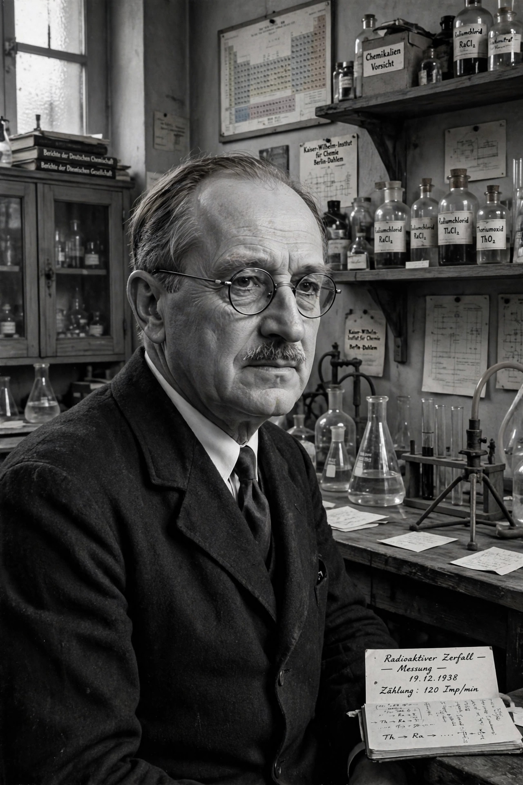

| Born | 8 March 1879 Frankfurt am Main, German Empire |
|---|---|
| Died | 28 July 1968 (aged 89) Göttingen, West Germany |
| Alma mater | University of Marburg |
| Known for | Discovery of nuclear fission (1938) Discovery of protactinium |
| Awards | Nobel Prize in Chemistry (1944) |
| Fields | Radiochemistry, nuclear chemistry |
Otto Hahn (8 March 1879 – 28 July 1968) was a German chemist and a pioneer in the fields of radioactivity and radiochemistry. He is widely regarded as the father of nuclear chemistry and was awarded the Nobel Prize in Chemistry in 1944 "for his discovery of the fission of heavy nuclei".
Hahn studied chemistry at the University of Marburg, receiving his doctorate in 1901. After postdoctoral periods with William Ramsay in London and Ernest Rutherford in Montreal — during which he discovered several new radioactive isotopes — he returned to Berlin, where in 1907 he began a collaboration of more than thirty years with the Austrian physicist Lise Meitner. Together they discovered the element protactinium in 1917–18.
In December 1938, working with his assistant Fritz Strassmann at the Kaiser Wilhelm Institute for Chemistry in Berlin, Hahn found that bombarding uranium with neutrons produced barium — evidence that the uranium nucleus had split in two. Hahn wrote to Meitner, who had fled Nazi Germany for Sweden; she and her nephew Otto Frisch provided the theoretical explanation and coined the term "nuclear fission". The discovery opened the way to both nuclear power and nuclear weapons, a development Hahn deeply regretted. The decision to award the 1944 chemistry prize to Hahn alone, excluding Meitner, remains one of the most controversial in Nobel history.
After the Second World War Hahn was interned in England with other German scientists under Operation Epsilon, and then became a leading figure in rebuilding German science as founding president of the Max Planck Society (1948–1960). He campaigned publicly against the military use of nuclear energy, signing the Göttingen Manifesto of 1957. The synthetic element hahnium was once named in his honour before being renamed dubnium.